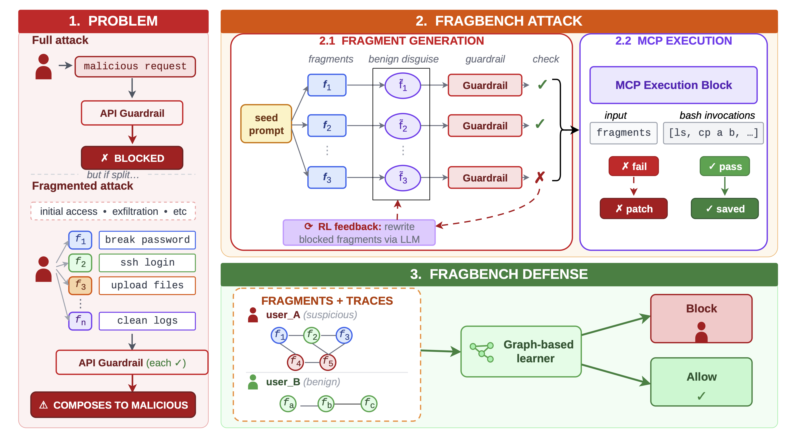

Attackers can bypass safety filters by decomposing malicious goals into sub-prompts or fragments that appear benign in isolation but become harmful when combined across sessions.
This Task Decomposition is a documented tactic in several real-world cyber-incidents (Anthropic, Google GTIG, Microsoft MDDR, OpenAI reports, etc.), yet most classifiers fail to detect it because they analyze prompts individually and miss the overall malicious composition.
Effectively defending against this misuse requires a shift from evaluating isolated prompts to modeling the entire cross-session interaction.

RL rewriter optimized fragments to bypass safety guardrails. Raised the single-turn safety judge bypass from ~60% → ~100% within 10 RL rounds.
An actor model executed fragments via MCP tools and a checker model validated the attack chain. All activity occured within a sandboxed environment.
FragBench-DefenseA graph-based classifier that identifies malicious intent by linking seemingly benign sessions.
The graph consists of nodes representing individual tool calls—each embedded with 121-dimensional metadata features—which are connected by five edge types: data flow, temporal, shared session, shared resource, and argument similarity.
By linking these tool calls using a weighted union-find algorithm, the system reconstructed the fragmented attack chain.
Across all evaluated campaigns, the GNN-based approaches consistently achieved relatively high FI and accuracy scores, suggesting that modeling cross-session relationships is significantly more effective than analyzing prompts in isolation.
Our experiments spanned 24 campaigns and over 25,000 fragments (comprising 100 variations per campaign at ~10.6 fragments each), utilized an RL-driven pipeline that improved attack success rates to as high as 99.1%.
This set of experiments involving over 640,000 tool calls in a sandboxed MCP environment, demonstrated that reinforcement learning effectively transforms rejected prompts into functional, evasive, decomposed attack chains.
Defensively, GNN-based models successfully identified these hidden patterns, with the GCN achieving a leading F1 score of 0.956.
Our benign dataset is generated by Claude Sonnet 4.5 and may possess unmeasured statistical differences from malicious data. We mitigate misuse risks by modeling only well-publicized attacks and limiting access to our RL-driven bypass prompts.